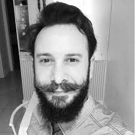

|
| |
Edson Oliveira Junior - Universidade Estadual de Maringá (UEM)
Fernando dos Santos - Universidade do Estado de Santa Catarina (UDESC)
 Maicon Bernardino - Universidade Federal do Pampa (UNIPAMPA)
 Williamson Silva (UNIPAMPA) - Fórum de Graduação
Williamson Silva (UNIPAMPA) - Fórum de Graduação
 Aline M. M. M. Amaral (UEM) - Fórum de Pós-Graduação
Aline M. M. M. Amaral (UEM) - Fórum de Pós-Graduação
 Pablo Schoeffel (UDESC) - Trilha da Indústria
Pablo Schoeffel (UDESC) - Trilha da Indústria